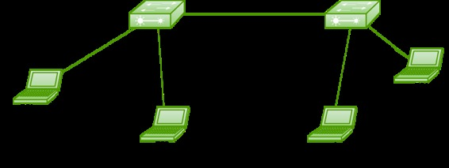

Switch ports are layer 2 interfaces which are used to carry layer 2 traffic. A single switch port can carry single VLAN traffic whether it is an access port or trunk port. Frames are handled differently according to the type of link they are traversing.
Note: All switch ports are assigned VLAN 1 by default (VLAN 1 cannot be modified or deleted).
There are 2 different types of ports in a switched environment:
Access ports –
This switch ports belongs to carry the traffic of only one vlan. By default, it will carry the traffic of native vlan (VLAN 1) .If the switch ports are assigned as access ports then it can be considered as the switch ports belongs to a single broadcast domain. Any traffic arriving on these switch ports are considered as it belongs to the VLAN assigned to the port.
Example:

Here is a simple topology in which 2 switches are connected and only the default VLAN (VLAN 1)is configured on both switches i.e all the switch ports of both switches belongs to single broadcast domain.
Now, note that the link between the switches has to be configured as an access port because only a single VLAN (VLAN 1) data has to be exchanged. Now after assigning IP address to PC1-12.168.1.1/24, PC2-192.168.1.2/24, PC3-192.168.1.3/24, PC3-192.168.1.4/24, user shall configure the link between 2 switches as access port.
Switch1(config)#interface fa0/0 Switch1(config-if)#switchport mode access
Here, there is no need to assign VLAN to the ports as all the switch ports on both switches are configured as VLAN 1 by default.
Trunk ports –
These switch ports belongs to and carry the traffic of more than one VLAN. This is a great advantage as to carry the traffic of group of VLAN, a single switch port can be used. These are of great use if user wants to exchange traffic between more than one switches having more than one vlan configured.To identify traffic belongs to which vlan, VLAN identification method (802.1q or ISL) are used. Also, to carry traffic between more than one vlan, then inter vlan routing is required, in which the link between router and switch is configured as trunk as the link has to carry the traffic of more than one VLAN (in case of router on a stick configuration not in inter vlan routing by layer 3 switches).
Note: Trunk links can carry the traffic of different VLANs across them but by default, if the links between switches are not trunk then only information from the configured access VLAN will be exchanged.
Example:
Here is a simple topology in which 2 switches are connected and VLANs 2 and 3 are configured on both switches as shown.
Note –
As user has not assigned any VLANs to other ports of switches therefore the other ports will be in VLAN 1 by default.
Now, note that the link between the switches has to be configured as trunk port because here more than one VLAN (VLAN 1, 2, 3) frame has to be exchanged between the switches. Now assigning IP address to PC1-12.168.1.1/24, PC2-192.168.2.1/24, PC3-192.168.1.2/24, PC3-192.168.2.2/24.
Now, first user has to make VLANs on both switches.
Switch1(config)#vlan 2 Switch1(config)#vlan 3 Switch2(config)#vlan 2 Switch2(config)#vlan 3
Now, as user has more than one vlan configured on both switches. Therefore, user have to assign the VLANs to their respective ports on Switch1.
Switch1(config)#interface fa0/1 Switch1(config-if)#switchport access vlan 2 Switch1(config)#interface fa0/2 Switch1(config-if)#switchport access vlan 3
Now, configure VLANs on their respective ports on Switch2 .
Switch2(config-if)#interface fa0/1 Switch2(config-if)#switchport access vlan 2 Switch2(config)#interface fa0/2 Switch2(config-if)#switchport access vlan 3
Now, configure the link between 2 switches as trunk port.
Switch1#interface fa0/0 Switch1#switchport trunk encapsulation dot1q Switch1#switchport mode trunk
As a result of this, now user can carry more than one VLAN traffic from one switch to another switch (here, only configuration of switch ports are shown not the configuration of router is shown. To perform inter vlan routing, configuration of router is also needed).